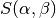

1. Data Structures¶
The purpose of this section is to give you an overview of the major data structures in OpenMC and how they are logically related. A majority of variables in OpenMC are derived types (similar to a struct in C). These derived types are defined in the various header modules, e.g. src/geometry_header.F90. Most important variables are found in the global module. Have a look through that module to get a feel for what variables you’ll often come across when looking at OpenMC code.
1.1. Particle¶
Perhaps the variable that you will see most often is simply called p and is of type(Particle). This variable stores information about a particle’s physical characteristics (coordinates, direction, energy), what cell and material it’s currently in, how many collisions it has undergone, etc. In practice, only one particle is followed at a time so there is no array of type(Particle). The Particle type is defined in the particle_header module.
You will notice that the direction and angle of the particle is stored in a linked list of type(LocalCoord). In geometries with multiple Universes, the coordinates in each universe are stored in this linked list. If universes or lattices are not used in a geometry, only one LocalCoord is present in the linked list.
The LocalCoord type has a component called cell which gives the index in the cells array in the global module. The cells array is of type(Cell) and stored information about each region defined by the user.
1.2. Cell¶
The Cell type is defined in the geometry_header module along with other geometry-related derived types. Each cell in the problem is described in terms of its bounding surfaces, which are listed on the surfaces component. The absolute value of each item in the surfaces component contains the index of the corresponding surface in the surfaces array defined in the global module. The sign on each item in the surfaces component indicates whether the cell exists on the positive or negative side of the surface (see Geometry).
Each cell can either be filled with another universe/lattice or with a material. If it is filled with a material, the material component gives the index of the material in the materials array defined in the global module.
1.3. Surface¶
The Surface type is defined in the geometry_header module. A surface is defined by a type (sphere, cylinder, etc.) and a list of coefficients for that surface type. The simplest example would be a plane perpendicular to the xy, yz, or xz plane which needs only one parameter. The type component indicates the type through integer parameters such as SURF_SPHERE or SURF_CYL_Y (these are defined in the constants module). The coeffs component gives the necessary coefficients to parameterize the surface type (see <surface> Element).
1.4. Material¶
The Material type is defined in the material_header module. Each material contains a number of nuclides at a given atom density. Each item in the nuclide component corresponds to the index in the global nuclides array (as usual, found in the global module). The atom_density component is the same length as the nuclides component and lists the corresponding atom density in atom/barn-cm for each nuclide in the nuclides component.
If the material contains nuclides for which binding effects are important in low-energy scattering, a  can be associated with that material through the sab_table component. Again, this component contains the index in the sab_tables array from the global module.